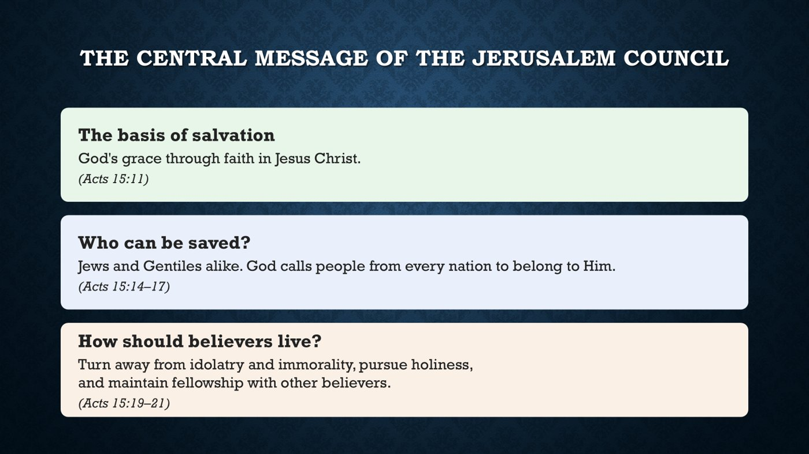
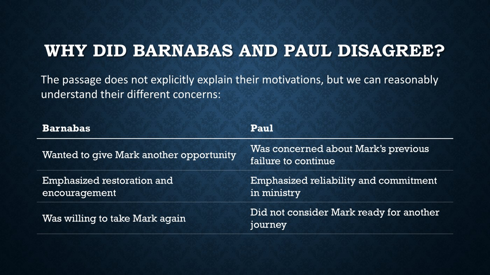

We should not make it difficult for the Gentiles who are turning to God. Acts 15:19
This Bible study focused on Acts 15:13–44, centering on the decisions of the First Jerusalem Council: salvation is received solely through faith in Jesus Christ and God's grace, independent of circumcision or the Law of Moses. The council affirmed that Gentiles do not need to become Jews in order to be saved, and provided four practical guidelines for Gentile believers. The chapter concludes with the account of Paul and Barnabas parting ways over the issue of John Mark, which objectively resulted in the gospel ministry reaching a wider range of regions.
Decisions and Core Teachings
Three Major Conclusions of the Jerusalem Council
- The Foundation of Salvation: Salvation is by God's grace alone, through faith in Jesus Christ — not by works, not by keeping the Law of Moses, not by circumcision, and not by being born Jewish.
- Who Can Be Saved: Salvation is not limited to Jews. Gentiles and all peoples of the earth can be saved. God's election shows no ethnic favoritism.
- The Christian Way of Life: After coming to faith, believers are called to turn away from idolatry, sexual immorality, and other sins, to pursue a holy life, and to love and fellowship with one another.

Four Practical Guidelines
These four principles are not conditions for salvation, but are intended to help Gentile believers separate themselves from pagan culture:
- Abstain from food sacrificed to idols: Do not eat food that has been offered to pagan idols, as this is associated with idolatry, sexual immorality, and other evil rituals.
- Abstain from sexual immorality: Pagan religious rituals were often accompanied by sexual immorality; believers are called to cut all ties with such practices.
- Abstain from the meat of strangled animals: Animals must be slaughtered properly; those that died naturally or were strangled are not to be eaten.
- Abstain from blood: Blood represents life and, according to the tradition of that time, was not to be consumed.
Main Discussion Topics
Background of the Council: The Origin of the Controversy
After Paul and Barnabas returned to Antioch from their first missionary journey, certain Jewish Christians from Jerusalem came and told Gentile believers: "Unless you are circumcised and keep the Law of Moses, you cannot be true Christians." This coercive teaching caused division in the church at Antioch, prompting Paul and Barnabas to travel to Jerusalem to discuss the matter with the apostles and elders — giving rise to the First Jerusalem Council.
Peter's Testimony
Peter stood up and reminded the assembly of the conversion of Cornelius's household: God had given the Holy Spirit to these Gentiles even though they had not been circumcised or kept the dietary laws of Moses. Peter's conclusion was that the same Holy Spirit had come upon the Gentiles just as He had upon the Jewish believers at Pentecost, and therefore compelling Gentiles to keep the Law was wrong.
The Testimony of Barnabas and Paul
Barnabas and Paul also gave testimony, recounting the signs and wonders God had performed through them among the Gentiles during the first missionary journey, and the assembly fell silent.
James's Closing Address
James (the brother of Jesus, not the apostle among the Twelve) delivered the key summary statement:
- God's election of the Gentiles was not a new development, but had been part of God's plan from the beginning of creation, foretold by the Old Testament prophets.
- Citing the Old Testament: God promised to rebuild the fallen tabernacle of David — a foreshadowing of the kingdom the Messiah would establish, intended not only for Israel but for all peoples.
- The theological significance of "for God's name": God chose Israel so that through them He might display His glory, power, and lovingkindness, making known to all the earth that the LORD is the one true God. In the same way, God chooses Christians today so that we might be salt and light in the world, reflecting God's character and drawing more people to know and glorify Him.
The Typological Significance of the Tabernacle of David
The Davidic kingdom and its temple served as a foreshadow of God's future kingdom. The Davidic dynasty eventually fell with the division of the kingdom into north and south, but God promised to restore it through the Messiah, Jesus Christ. The kingdom of God has already begun through the resurrection of Jesus ("already but not yet") — when believers gather together in love, the kingdom is present among them — yet its full realization awaits the return of Christ and the establishment of the new heaven and new earth.
Extended Discussion on Food Regulations
Paul revisited the issue of food sacrificed to idols in his letters because:
- In the first-century Gentile world, most meat sold in the marketplace came from pagan altars, making complete abstinence virtually equivalent to vegetarianism.
- Paul distinguished between "strong" and "weak" believers: when with strong believers, one may eat; but if a weak believer is present, one should abstain out of care for them, so as not to cause them to stumble.
- The key principle: these dietary regulations have nothing to do with salvation; the core concern is consideration and love for others.
- A modern parallel: just as a missionary evangelizing in a Muslim region might choose not to eat pork in order to win the trust of the local people — this is an expression of love, not a condition for salvation.
Contrast Between False Teaching and Truth
The fruits of false teaching and true teaching are starkly different:
- False teaching produces strife, confusion, and division; truth / sound teaching produces peace, unity, and joy.
- False teaching places burdens on people (e.g., legalism); truth brings freedom and peace.
- False teaching disturbs the church; truth strengthens the church.
When the letter containing the Jerusalem Council's decision was brought to Antioch and read aloud to the congregation, the Gentile believers rejoiced greatly and the church was restored to peace. This contrast remains equally applicable today: any teaching that leads people into confusion, bondage, or extremism does not come from God; truth that truly comes from God sets people free and gives them peace.
The Role of Judas and Silas: The Office of the New Testament Prophet
The Jerusalem church specifically chose Judas (also called Barsabbas) and Silas to accompany the delegation to Antioch, because:
- Paul and Barnabas were already parties to the dispute, and their alone reporting the council's decision would lack credibility.
- Authoritative witnesses from Jerusalem were needed to personally confirm the content of the decision.
Scripture refers to Judas and Silas as prophets. The discussion drew a distinction between the prophetic office in the Old and New Testaments:
- Old Testament prophets: Primarily brought warnings, announcing God's judgment and punishment upon Israel for their disobedience.
- New Testament prophets: Their primary function shifted to exhortation and encouragement, strengthening believers in their adherence to God's Word.
The Disagreement Between Paul and Barnabas
The Cause of the Disagreement
Paul proposed a second missionary journey — not to pioneer new territory, but to revisit the churches already established, to assess the spiritual condition of the believers and offer encouragement and teaching (since the New Testament had not yet been written, believers were prone to confusion regarding sound doctrine). The two men came to a sharp disagreement over whether to take John Mark along:
- Paul: Mark had abandoned the mission partway through the first journey without cause — a serious dereliction of duty — and should not be taken along again.
- Barnabas: Insisted on giving Mark a second chance, willing to come alongside him and help him re-engage in ministry.

Two Leadership Styles Interpreted
This disagreement was not a matter of right versus wrong, but a reflection of two different leadership personalities and ministry priorities:
- Paul: Goal-oriented, principled, focused on commitment and accountability — a pioneering leader who sets the big-picture direction.
- Barnabas (whose very name means "Son of Encouragement"): Gentle and humble, gifted at encouraging and restoring others, willing to give people a second chance — entirely consistent with his earlier character when he alone welcomed Paul after his conversion, at a time when everyone else was still afraid of him.
The Outcome and God's Providence
Barnabas took Mark and sailed to Cyprus; Paul chose Silas and traveled through Syria and Cilicia, strengthening the churches. From a higher perspective, this parting of ways enabled two teams to cover more territory and visit more churches, objectively expanding the reach of the ministry — perhaps precisely according to God's good purposes.
Q&A Highlights
Question 1: Where did Paul preach during his missionary journeys?
- Wherever there was a synagogue in a city, Paul would go there on the Sabbath (Saturday), because that was where Jews and God-fearing Gentiles who were interested in faith would gather.
- On Sundays, he would attend Christian gatherings (early churches typically met in homes).
- In cities with a strong philosophical culture (such as Athens), he would also engage people in debates about faith in the marketplace.
- Modern Messianic Jews (Jews who have come to faith in Christ) sometimes maintain a similar pattern: synagogue on Saturday, church on Sunday.
Question 2: Did the early church have a hierarchical structure?
The order of the church is fundamentally different from the hierarchical structure of secular organizations:
- Secular organizations: Authority derives from rank and position (hierarchical).
- The church: Authority derives from the guidance of the Holy Spirit and spiritual gifts. Jesus Christ is the head of the church; no single leader has the right to act unilaterally.
- The church has roles such as pastors, ministers, and deacons — these represent differences in gifts and function, not differences in status or rank.
- Major decisions are to be reached collectively by leaders and congregation together under the guidance of the Holy Spirit; no leader may coerce the congregation.
- The organizational structure of the early church was not yet fully developed; the disagreement between Paul and Barnabas was not a clash of hierarchical authority, but a matter of how fellow workers handled differing opinions.
- A healthy church should exhibit: order, mutual love, joy in worship, and harmonious unity — these are the marks of the Holy Spirit's presence.